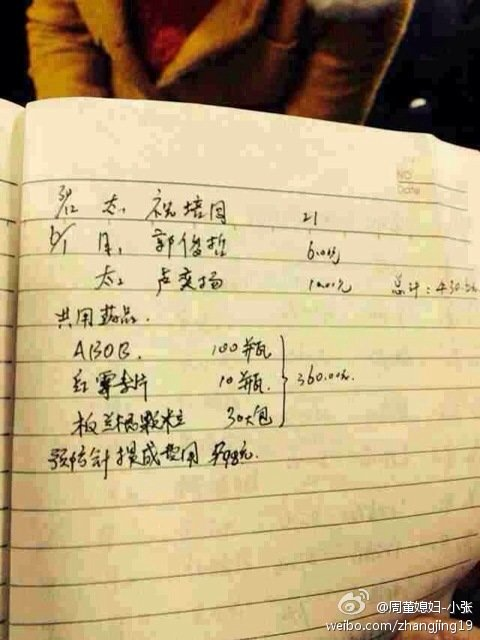
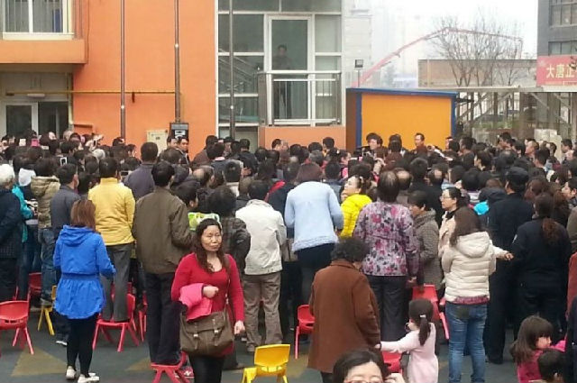
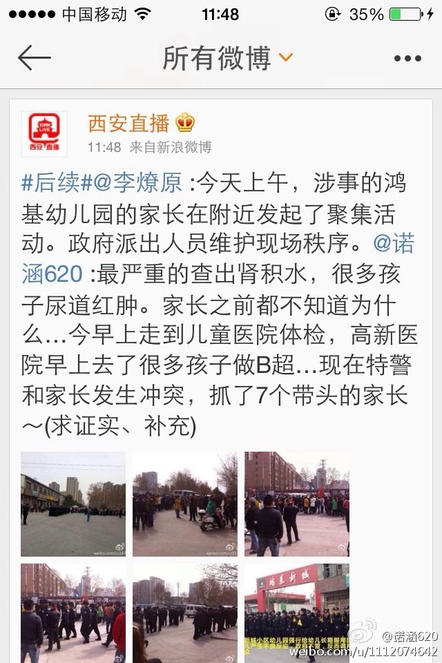
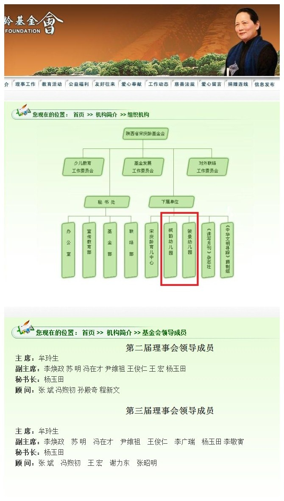
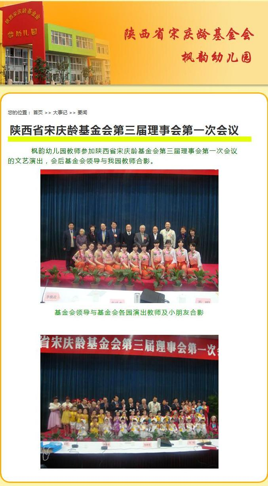

近期热点事件太多了，有点应接不暇。有读者希望俺聊聊乌克兰的纷争，也有人建议聊聊台湾的学运。但是俺还是先聊天朝的“药儿园”。俺的读者里面，大部分人都在天朝之内，而且大部分人将来都会有自己的小孩——所以这事儿可以说是跟大伙儿的切身利益紧密相关的。俺经常在博客中提到一句话：【你可以不关心政治，但政治会来关心你】。通过此次事件，希望有更多人能够理解这句话的深意。
为了免得五毛说俺造谣，下面引用的文章也包括朝廷官网（比如新华网、人民网）的文章。
《西安幼儿园多名幼儿因违规服药心肌受损 @ 腾讯新闻》
《陕西被服药幼儿家长：省宋庆龄基金会难辞其咎 @ 腾讯新闻》
《西安幼儿园服药事件5人被刑拘 5年购药超5万片 @ 新浪新闻》
《吉林一幼儿园涉喂“病毒灵” 幼儿拒吃药被罚站 @ 网易新闻》
《湖北多所幼儿园被曝“喂药” @ 新华网》
下面这两张照片是幼儿家长在医务室找到的“药品领用登记表”。除了“病毒灵（ABOB）”，貌似“板蓝根”也是该幼儿园的偏好。

在西安，受害幼儿们的家长上街抗议。不妨扪心自问一下：如果是你的小孩碰到这种事情，你会上街抗议吗？

面对家长的抗议，当地衙门出动警力，对家长进行“维稳”。这帮维稳系统的家伙，典型的朝廷走狗。他们就知道对付屁民。

每次天朝发生啥负面的热点事件，总少不了各种五毛（职业五毛、自干五）。比如此次的幼儿园服药事件发生后，俺就看到网上有人评论说：
说实在的，这样的五毛真的很弱智。俺引用某受害者家长的一句话来反驳：
陕西省的宋庆龄基金会第一时间出来表态，企图撇清干系。有网友发文分析了宋庆龄基金会与涉案的两所幼儿园具有密切的关系。并且在该基金会的官网找到相关的证据。
网文和截图如下。
《幼儿园违法服药真相：陕西省宋庆龄基金会严重渎职 @ 搜狐博客》
 
《病毒灵到底是什么药 @ 新浪健康频道》
《幼儿园为何青睐“病毒灵”？ @ 人民网》
《幼儿园接连被爆喂服病毒灵 处方药得来全不费功夫 @ 人民网》
《中国频现“药”儿园 经营者将其当作生意 @ 网易财经》
《骇人听闻的喂药事件如何发生 @ 腾讯评论》
根据上述转载的分析文章，这种事情相当于行业潜规则。目前已经有三个省份曝光。如果你以为只有这三个省份才有，那你就太天真啦。肯定还有很多这类案例没有被曝光。原因如下：
其一，此事闹得这么大，如果某个幼儿园给孩子服药，最近2周听到风声，肯定赶紧销毁证据；
其二，虽然很多省级官员信誓旦旦要严查，但也只是嘴上说说而已。这种事情曝光太多，要影响地方官政绩和仕途。你以为他们真会去严查？
顺便说一下，2011年3月，北京媒体就曝光了一起幼儿园集体服药事件。地点是“北京通州新天地幼儿园”，180个小孩出现药物过敏症状。当时涉案的医药公司是仁和药业。该公司财大气粗，动用公关公司进行所谓的“危机公关”——说白了就是动用各种渠道删除网络负面报道，然后动用大量水军在网上搅混水。
下面这篇报道提及了仁和药业是如何进行所谓的“危机公关”。
《优卡丹被疑有肝肾毒性 曾曝致180名孩子过敏 @ 凤凰网》
大伙儿不妨想想看，如果连“天朝的帝都”北京，在2011年就已经出现过这类事件，你以为你所在的省份能幸免吗？还是那句话——不要太天真啦。在天朝这样一个奇葩的国度，（除了权贵集团的人）没人能够免受各种伤害。
俺博客上，和本文相关的帖子（需翻墙）：
《每周转载：疫苗之殇，万民遭殃（大量网友评论）》
《每周转载：震惊全国的山东疫苗事件（各方报道及网友评论）》
《每周转载：携程托儿所虐童事件（各方评论及照片、视频）》
《每周转载：超级富豪王振华性侵9岁女童（大量网友评论，多图）》
《每周转载：汇总未成年人被性侵被嫖宿的案件（38起，附图）》
★幼儿园集体服药的报道（已有三个省份曝光）
为了免得五毛说俺造谣，下面引用的文章也包括朝廷官网（比如新华网、人民网）的文章。
《西安幼儿园多名幼儿因违规服药心肌受损 @ 腾讯新闻》
有多名幼儿存在心肌酶偏高的现象，此外还有数名幼儿肾积水，严重便秘的数名幼儿则被检查出了腹腔肠系膜淋巴结肿大。因为缺乏总体的统计数据，目前尚无法得出上述病症在幼儿中所出现的比例。
......
在鸿基新城幼儿园，一位5岁的幼童也被西安市儿童医院检查为“肝、胆、脾、胰、双肾未见明显异常”。但在前天，西安交大医学院第一附属医院的超声检查报告单的结果则是“双肾积水”。
一位王姓幼儿的父亲告诉南都记者，他从医疗系统的朋友处获悉，有关部门已经给当地医院打招呼，要求限制给涉事两所幼儿园的幼儿进行相关项目的检查。“他们想让西安市儿童医院垄断检查。”
《陕西被服药幼儿家长：省宋庆龄基金会难辞其咎 @ 腾讯新闻》
张先生是众多维权家长当中的一员，他的孩子就读于出事的陕西省宋庆龄基金会下属的枫韵幼儿园大班。
“服药的孩子共同症状就是头晕、肚子疼、腿疼，有的还出现了生殖器红肿。我的孩子从2013年开始老说头晕。作为家长没想太多，只是想着娃没休息好或者衣服穿少了，现在才明白是错怪孩子了。”张先生说。
......
西安市公安局雁塔分局副局长梁伟说，两所幼儿园共同的法人孙某等人为提高幼儿的出勤率，增加幼儿园的收入，【从2008年起】就冒用其他医疗机构名义非法购入俗称“病毒灵”的处方药“盐酸吗啉胍”给园内幼儿服用。
《西安幼儿园服药事件5人被刑拘 5年购药超5万片 @ 新浪新闻》
经查，枫韵、鸿基新城幼儿园现有在册幼儿1455人，孙某等人为提高幼儿出勤率，增加收入，在明知自己没有取得法定资格的情况下，以“吃药预防幼儿生病”为由，擅自购买处方药盐酸吗啉胍片(别名“病毒灵”)，不定期安排工作人员给园内幼儿服用。
通报称，现已查明，自2008年11月至2013年10月，该园冒用其他医疗机构名义，从4家医药批发零售企业先后分10次购进病毒灵5.46万片。
《吉林一幼儿园涉喂“病毒灵” 幼儿拒吃药被罚站 @ 网易新闻》
刘女士的女儿今年3岁半，进这个幼儿园快1年了。看到西安曝出儿童被“服药”事件后，刘女士就问女儿是否吃过白药片，女儿称没吃过药片，说是吃了老师给的“聪明豆”，白色的，苦苦的。女儿还告诉刘女士，这是他们与老师间的秘密，老师曾告诉他们回家不许和爸爸妈妈说。
......
家长王先生介绍，两天前，他带着3岁的女儿去岳母家，在一堆药片中，女儿无意中发现有“病毒灵”，称是“聪明豆”。她还告诉爸爸，有的小朋友因为偷偷地把“聪明豆”吐了，被老师发现后罚站了。
《湖北多所幼儿园被曝“喂药” @ 新华网》
下面这两张照片是幼儿家长在医务室找到的“药品领用登记表”。除了“病毒灵（ABOB）”，貌似“板蓝根”也是该幼儿园的偏好。
★由此引发的“不和谐事件”
在西安，受害幼儿们的家长上街抗议。不妨扪心自问一下：如果是你的小孩碰到这种事情，你会上街抗议吗？
★朝廷的“维稳”
面对家长的抗议，当地衙门出动警力，对家长进行“维稳”。这帮维稳系统的家伙，典型的朝廷走狗。他们就知道对付屁民。
★又见“五毛”
每次天朝发生啥负面的热点事件，总少不了各种五毛（职业五毛、自干五）。比如此次的幼儿园服药事件发生后，俺就看到网上有人评论说：
这些幼儿园的老师是出于好心，所以自愿买来预防流感的药物给儿童服用。
说实在的，这样的五毛真的很弱智。俺引用某受害者家长的一句话来反驳：
连一张A4草稿纸都不肯免费提供的园方，你相信他们会自愿买药给孩子吃，而且不找家长收钱？
★关于“宋庆龄基金会”
陕西省的宋庆龄基金会第一时间出来表态，企图撇清干系。有网友发文分析了宋庆龄基金会与涉案的两所幼儿园具有密切的关系。并且在该基金会的官网找到相关的证据。
网文和截图如下。
《幼儿园违法服药真相：陕西省宋庆龄基金会严重渎职 @ 搜狐博客》
★关于“病毒灵”和“处方药”
《病毒灵到底是什么药 @ 新浪健康频道》
盐酸吗啉胍片俗称“病毒灵”，主要成分是盐酸吗啉胍，临床上常常用于病毒性感染或是疱疹病毒的感染。作为一种广谱抗病毒药，盐酸吗啉胍片属于治疗药物，服用该药并不能预防病毒感染，不能作为预防性药物使用。盐酸吗啉胍片在使用后可能会出现一些如出汗、食欲不振和低血糖的反应，如果吃过药出现了药物过敏的情况就要立即停药，治疗观察。
......
药物本身是处方药，即便是生了病，也要谨遵医嘱按量服用。她介绍，病毒灵一般建议成人服用，因为这种药在出厂的时候没有做孩子的临床试验，药效不确切，所以不推荐孩子使用。
《幼儿园为何青睐“病毒灵”？ @ 人民网》
病毒灵”价格低廉，北青报记者向西安、长沙和广州三家药房询问“病毒灵”，其百片一瓶的价格在1元、1.5元和2.2元之间，一片的价格才一两分钱。
......
1999年底，国家药监局曾发出《关于公布拟停止使用非抗生素类抗感染药和解热镇痛类药品地方标准品种论证结果的通知》，其中就包括病毒灵片，停止使用的原因有处方不合理、疗效不确切等。
《幼儿园接连被爆喂服病毒灵 处方药得来全不费功夫 @ 人民网》
★相关的分析
《中国频现“药”儿园 经营者将其当作生意 @ 网易财经》
一名全国大型幼儿教育机构负责人周新（化名）向该报透露，给幼儿服药是普遍现象，“很多的民办幼儿园即使不给孩子们使用处方药，也存在在流感季使用非处方的抗病毒药品，防止出勤率下降的做法。”他认为，主要原因是经营者把幼儿园当成了一门生意，而不是教书育人的事业。“从业人员和投资人是生意人而不是教育者，而教育管理部门的不作为是导致给孩子喂药这类事件发生的重要原因之一。”
《骇人听闻的喂药事件如何发生 @ 腾讯评论》
一、幼儿园为何常年给幼儿喂药？的确是为了提高出勤率
二、给幼儿喂药的情形是否普遍？吉林已发现类似现象
三、常年给幼儿无病喂药的危害有多大？后果可能相当严重
四、给无病幼儿喂药事件反映出三大问题
1、一些幼儿园用药观念有极大问题，并且毫不在意家长幼儿知情权
2、部分教育机构办学目的只为赚钱，胆大包天
3、部分幼师为钱驱使，没有师德，为虎作伥
★前车之鉴——北京在2011年就已经出过这事儿
根据上述转载的分析文章，这种事情相当于行业潜规则。目前已经有三个省份曝光。如果你以为只有这三个省份才有，那你就太天真啦。肯定还有很多这类案例没有被曝光。原因如下：
其一，此事闹得这么大，如果某个幼儿园给孩子服药，最近2周听到风声，肯定赶紧销毁证据；
其二，虽然很多省级官员信誓旦旦要严查，但也只是嘴上说说而已。这种事情曝光太多，要影响地方官政绩和仕途。你以为他们真会去严查？
顺便说一下，2011年3月，北京媒体就曝光了一起幼儿园集体服药事件。地点是“北京通州新天地幼儿园”，180个小孩出现药物过敏症状。当时涉案的医药公司是仁和药业。该公司财大气粗，动用公关公司进行所谓的“危机公关”——说白了就是动用各种渠道删除网络负面报道，然后动用大量水军在网上搅混水。
下面这篇报道提及了仁和药业是如何进行所谓的“危机公关”。
《优卡丹被疑有肝肾毒性 曾曝致180名孩子过敏 @ 凤凰网》
大伙儿不妨想想看，如果连“天朝的帝都”北京，在2011年就已经出现过这类事件，你以为你所在的省份能幸免吗？还是那句话——不要太天真啦。在天朝这样一个奇葩的国度，（除了权贵集团的人）没人能够免受各种伤害。
俺博客上，和本文相关的帖子（需翻墙）：
《每周转载：疫苗之殇，万民遭殃（大量网友评论）》
《每周转载：震惊全国的山东疫苗事件（各方报道及网友评论）》
《每周转载：携程托儿所虐童事件（各方评论及照片、视频）》
《每周转载：超级富豪王振华性侵9岁女童（大量网友评论，多图）》
《每周转载：汇总未成年人被性侵被嫖宿的案件（38起，附图）》
版权声明
本博客所有的原创文章，作者皆保留版权。转载必须包含本声明，保持本文完整，并以超链接形式注明作者编程随想和本文原始地址：
https://program-think.blogspot.com/2014/03/weekly-share-63.html
本博客所有的原创文章，作者皆保留版权。转载必须包含本声明，保持本文完整，并以超链接形式注明作者编程随想和本文原始地址：
https://program-think.blogspot.com/2014/03/weekly-share-63.html